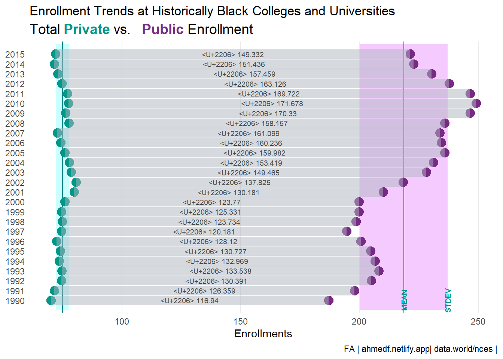

This week’s tidytuesday dataset explores the historically black college university enrollment trend. My attempt is to compare enrollment in public vs private school.
The focus would be to learn new packages/new functions. I am following Tobias Stalder example for this week. I would like to learn the ggtext functions following his vizualization.
# read in the data manually
# Or read in the data manually
hbcu_all <- readr::read_csv('https://raw.githubusercontent.com/rfordatascience/tidytuesday/master/data/2021/2021-02-02/hbcu_all.csv') %>% clean_names()Let us look at data after the year 1990 to 2015.
hbcu_all %>%
filter(year >= 1990) %>%
mutate(total_private = total_private/1000,
total_public = total_public/1000) %>%
select(year, total_private, total_public) %>%
mutate(diff = total_public - total_private) %>%
pivot_longer(cols = c(total_private, total_public)) %>%
rename(schl_cat = name,
enrollments = value)-> dat_school_cat
public <- dat_school_cat %>%
filter(schl_cat == "total_public")
private <- dat_school_cat %>%
filter(schl_cat == "total_private")
diff <- dat_school_cat %>%
filter(schl_cat == "total_private") %>%
mutate(x_pos = enrollments + (diff/2))dat_school_cat %>%
group_by(schl_cat) %>%
summarise(mean = mean(enrollments),
SE = sd(enrollments)) %>%
mutate(meanpos = mean + 1 *SE,
meanneg = mean - 1 *SE)-> stats
stats_public <- stats %>%
filter(schl_cat == "total_public")
stats_private <- stats %>%
filter(schl_cat == "total_private")ggplot(dat_school_cat) +
# 1-se plot for public
geom_rect(
xmin = stats_public$meanneg,
xmax = stats_public$meanpos,
ymin = 2016,
ymax = 1989,
fill = "#762a83",
alpha = .005
) +
# mean line for public
geom_vline(
xintercept = stats_public$mean,
linetype = "solid",
size = .5,
alpha = .8,
color = "#762a83"
) +
geom_rect(
xmin = stats_private$meanneg,
xmax = stats_private$meanpos,
ymin = 2016,
ymax = 1989,
fill = "#009688",
alpha = .005
) +
geom_vline(
xintercept = stats_private$mean,
linetype = "solid",
size = .5,
alpha = .8,
color = "#762a83"
)+
# points plot
geom_point(
aes(x = enrollments, y = year, color = schl_cat),
size = 4,
show.legend = FALSE
) +
scale_color_manual(values = c("#009688", "#762a83")) +
geom_vline(
xintercept = stats_private$mean,
color = "#009688",
linetype = "solid",
size = .5,
alpha = .8
)+
geom_segment(
data = private,
aes(
x = enrollments,
y = year,
yend = public$year,
xend = public$enrollments
),
color = "#aeb6bf",
size = 4.5,
alpha = .5
) +
geom_text(
data = diff,
aes(
label = paste("∆", diff),
x = x_pos,
y = year
),
color = "#4a4e4d",
size = 2.5)+
geom_text(
x = stats_public$mean ,
y = 1990,
label = "MEAN",
angle = 90,
size = 2.5,
color = "#009688"
) +
geom_text(
x = stats_public$meanpos ,
y = 1990,
label = "STDEV",
angle = 90,
size = 2.5,
color = "#009688"
) +
scale_y_continuous(breaks = seq(1990,2015,1))+
xlab("Enrollments") +
ggtitle("Enrollment Trends at Historically Black Colleges and Universities") +
labs(subtitle = "Total <span style = 'color: #009688;'>**Private**</span> vs. <span style = 'color: #762a83;'> **Public**</span> Enrollment",
caption = "FA | ahmedf.netlify.app| data.world/nces |" )+
theme_minimal() +
theme(
panel.grid.major.y = element_blank(),
panel.grid.minor.y = element_blank(),
# panel.grid.major.x = element_blank(),
panel.grid.minor.x = element_blank(),
axis.title.y = element_blank(),
# axis.text.y = element_blank(),
# axis.ticks.y = element_blank(),
# axis.ticks.x = element_line(color = "#4a4e4d"),
# text = element_text(color = "#4a4e4d"),
# strip.text.y.left = element_text(angle = 0),
# panel.background = element_rect(fill = "white", color = "white"),
# strip.background = element_rect(fill = "white", color = "white"),
# strip.text = element_text(color = "#4a4e4d"),
# plot.background = element_rect(fill = "white"),
# panel.spacing = unit(0, "lines"),
# plot.margin = margin(1, 1, .5, 1, "cm"),
# plot.caption = element_markdown(hjust = 0, lineheight = 1.5),
plot.subtitle = element_markdown(size = 14),
# plot.title = element_text(size = 16, hjust = -.8)
) 